邹英姿，非遗项目苏绣代表性传承人，中国工艺美术大师。在继承传统绣法的基础上，她吸取绘画、摄影、雕塑等领域的艺术表现手法，形成自己的技艺风格，其独创的“邹氏滴滴针法”获得全国首个针法发明专利。
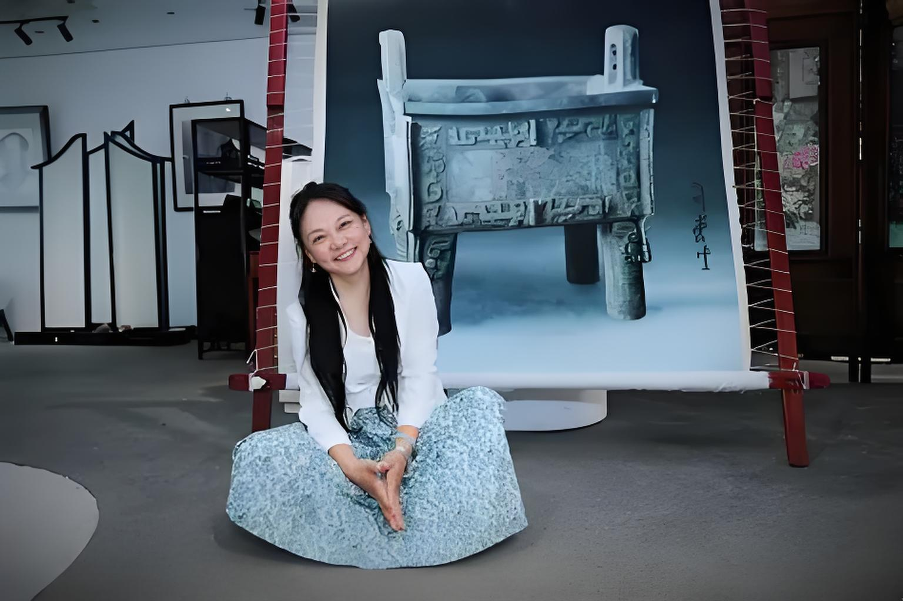
从绣乡少女到专业绣者
邹英姿 1972 年生于苏州镇湖，这片坐落于太湖之滨的土地，是享誉全国的苏绣之乡，千年丝绣文脉绵延不绝，家家户户皆以刺绣为业，街巷间处处皆是针线穿梭、绣品晾晒的场景，她自幼便在浓厚的传统刺绣氛围中耳濡目染，心底早早埋下了苏绣艺术的种子。
她 6 岁便跟着母亲潜心学习刺绣，小小年纪就展现出远超常人的刺绣天赋，对丝线的质感、色彩的搭配、针法的运用都有着极强的悟性。
长大后她正式拜师苏绣名家王祖识门下，潜心跟随大师系统学习苏绣传统技艺，熟练掌握平针、散套针等经典核心针法，练就了扎实深厚的刺绣功底，也深刻领悟了传统苏绣的艺术精髓。
二十多岁时，凭借多年沉淀的精湛技艺，她已经能独立完成各类高难度精品绣品，绣作题材丰富、针法细腻、意境十足，凭借出众的实力在当地刺绣界崭露头角，随后顺利开设了属于自己的绣馆，凭借优质的绣品收获了不错的口碑，成为当地颇具名气的青年绣艺师。
中途因身体原因，她不得不短暂放下绣针、离开热爱的刺绣事业，而她也抓住这段沉淀自我的宝贵机会，进入苏州工艺美术学院系统进修学习，潜心钻研书法、国画、雕塑、摄影等多元艺术知识，将不同艺术形式的美学理念、构图思路、造型技法融入刺绣创作思维中，全面提升自身艺术修养与创作格局，为后续的技艺创新和高端创作埋下了至关重要的伏笔。
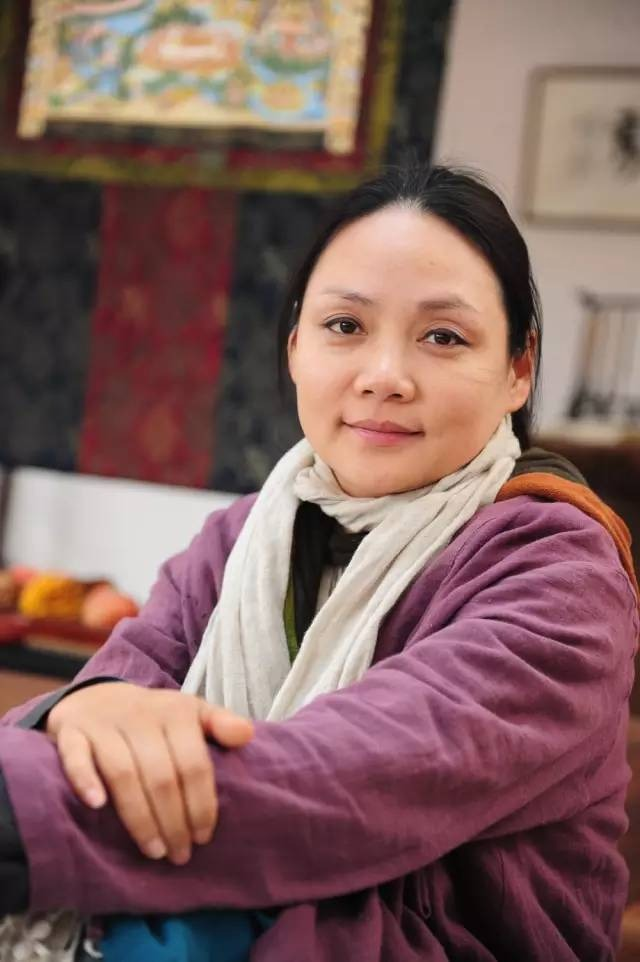
独创针法与经典作品
在长期创作中，邹英姿发现传统苏绣偏平面，表现力有局限，于是开始潜心研究新针法。2008 年，她从民间纳鞋底工艺中获得灵感，独创邹氏滴滴针法，并获得全国首个刺绣针法国家发明专利。
这种针法针脚短促密集、层层叠加，让绣品更有立体感和厚重感，大大拓展了苏绣的表现空间。
邹英姿以敦煌壁画和造像为题材做刺绣已有十几年了，其间，她多次到敦煌，观摩了莫高窟和榆林沟的十多个洞窟，认真观察了不同时期的壁画和造像，对古代艺术家和工匠的精湛技艺和奇思妙想赞叹不已。她最具代表性的作品之一，是耗时四年、绣出三百多万针的《凉州瑞像图》。
刺绣《凉州瑞像图》是斯坦因取自敦煌莫高窟藏经洞的唐代初期大幅刺绣，现藏于大英博物馆，一百多年来由于较少公开而鲜有研究。这件作品针法与当今流行的大不相同，这着实触动了邹英姿好奇的神经，随即进行了大量的仿制和创作方面的刺绣实验，但是仅仅通过图片的研究和模仿是远远不够的。
为复绣《凉州瑞像图》，她远赴大英博物馆、美国盖蒂博物馆、奈良国立博物馆观摩研究。邹英姿给大英博物馆写信，申请观摩《凉州瑞像图》。第一次申请被拒后，她继续写信申请。大英博物馆回复邹英姿，《凉州瑞像图》将和其他国家博物馆所收藏的敦煌艺术珍品一道，在美国洛杉矶盖蒂博物馆特别展出。
于是，2016年的10月，邹英姿专程飞赴美国，终于在洛杉矶盖蒂博物馆得以一睹 《凉州瑞像图》的真容。连续五天， 邹英姿对这幅作品细细的观摩和学习，做了许多的笔记和草图，回来之后又继续进行研学和绣制。
邹英姿通过对 《凉州瑞像图》的观摩和复绣，对当时独特的针法和排线手法做了深入的研究。在此过程中，邹英姿挖掘出了失传已久的劈针绣技法，并将这种针法运用到人物主题作品的创作中。
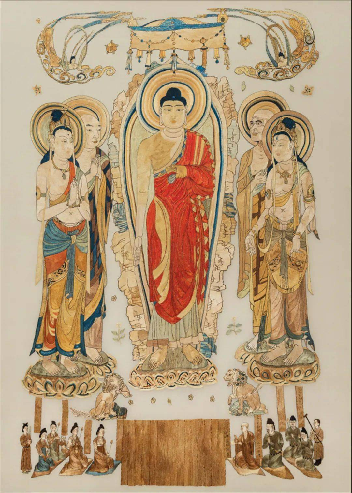
复绣作品《凉州瑞像图》2020年
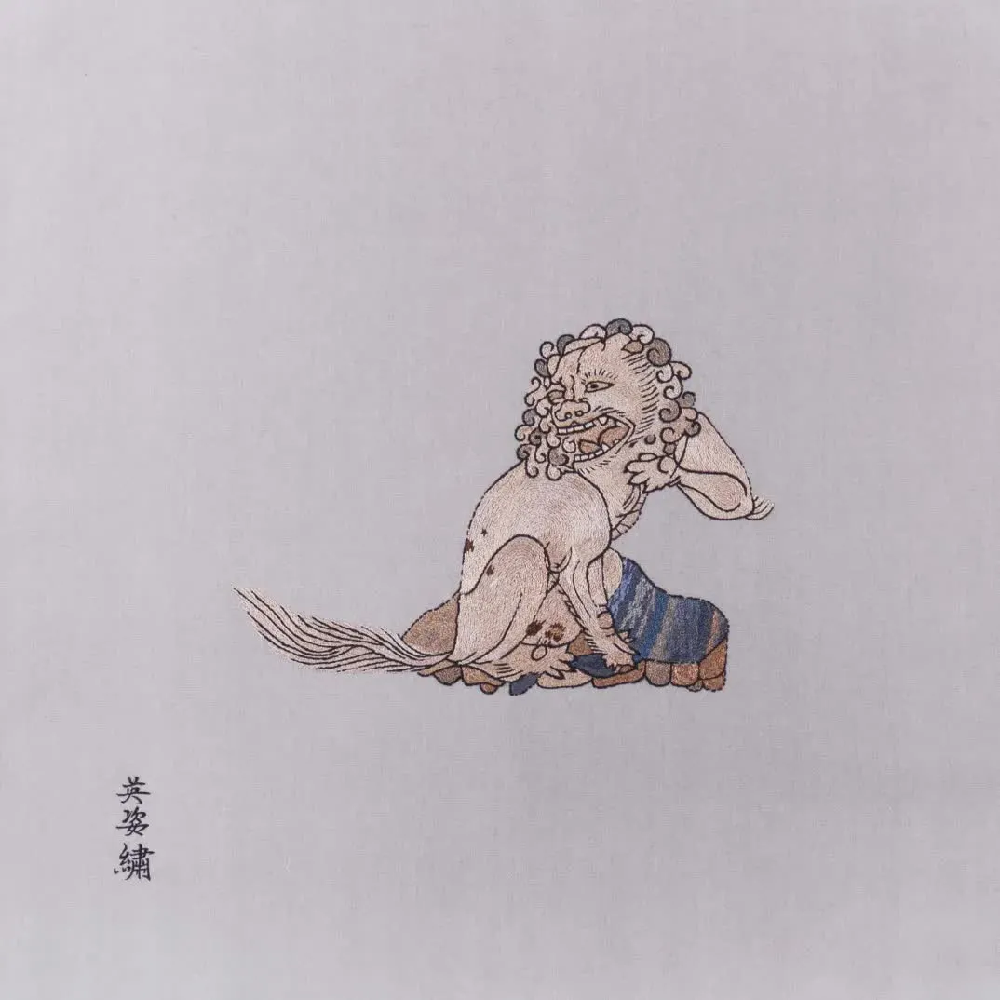
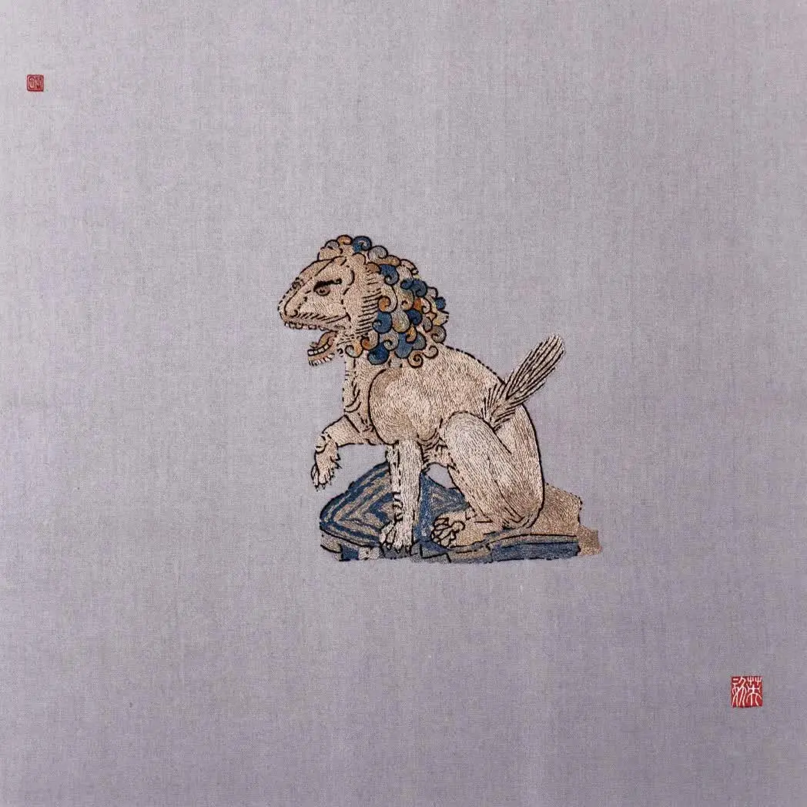
《凉州瑞像狮子》
邹英姿说：“研究和复绣的过程，也让我感受到古代绣娘的智慧，这就像一种穿越时空的对话”。
在后面敦煌第45窟群像刺绣作品中，邹英姿在承续古人的基础上大胆创新，发明了“滴滴绣”针法。
这种针法的特点在于针脚短，可以避免长针脚丝线本身对光的折射，非常适合绣制古朴典雅的作品。下面的敦煌第45窟群像刺绣作品，就是用这种针法制成。这一系列作品前后耗费约十年时间，是邹英姿刺绣针法技艺成熟的重要作品。作品在装裱上也颇费心思，哑光的玻璃，里衬用线头和泥料混合做底，整体上还原了敦煌壁画古朴的气息。
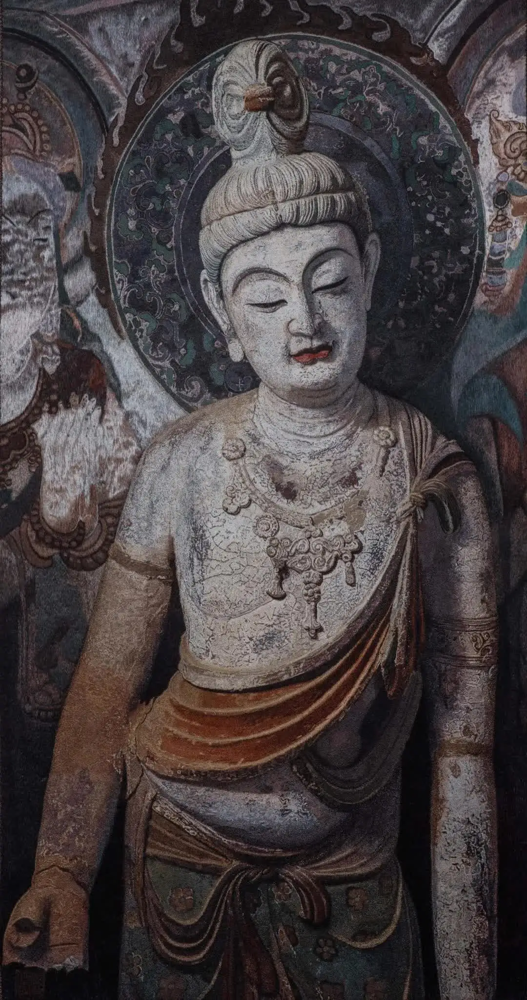
《左胁侍菩萨》
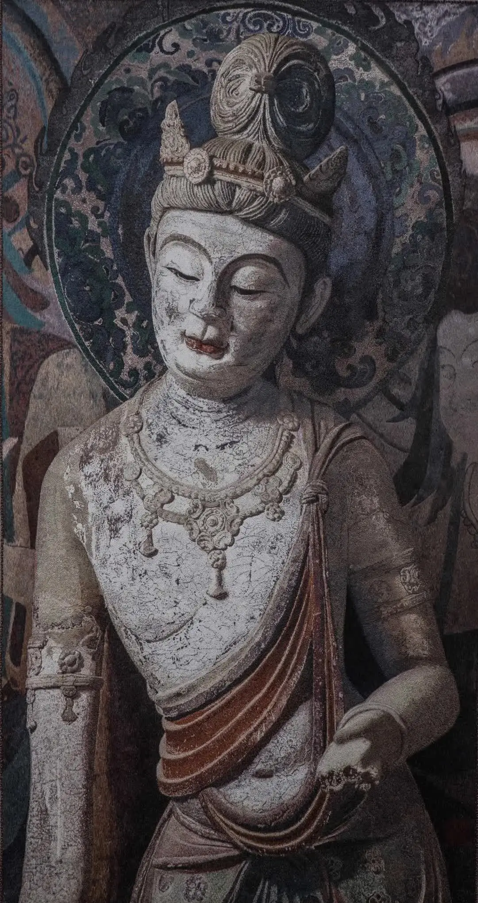
《右胁侍菩萨》
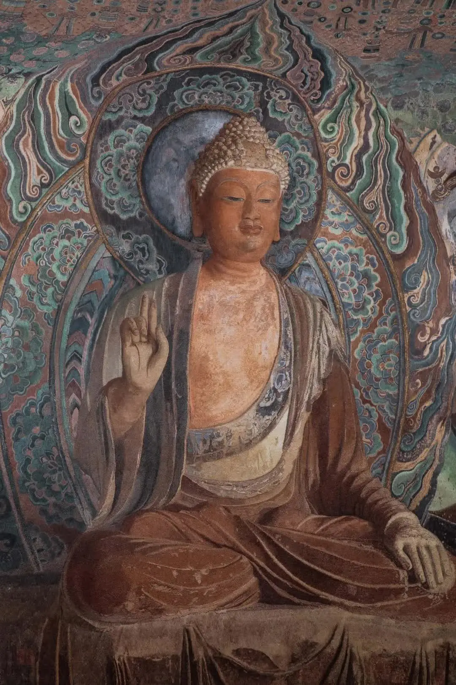
《佛陀》
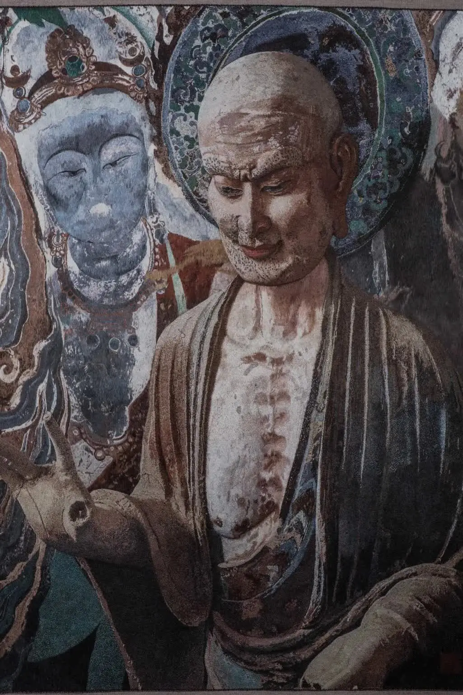
《迦叶》
除了敦煌系列作品，邹英姿的创作始终兼顾传统底蕴与时代表达，其作品《色空不二》被中国国家博物馆收藏，《缠绕》被大英博物馆收录，每一件绣品都凝聚着她对技艺的敬畏、对文化的坚守，将苏绣的细腻与厚重展现得淋漓尽致，也让 “邹氏滴滴针法” 成为当代苏绣创新的标志性符号，让千年丝绣在当代焕发新的艺术光彩。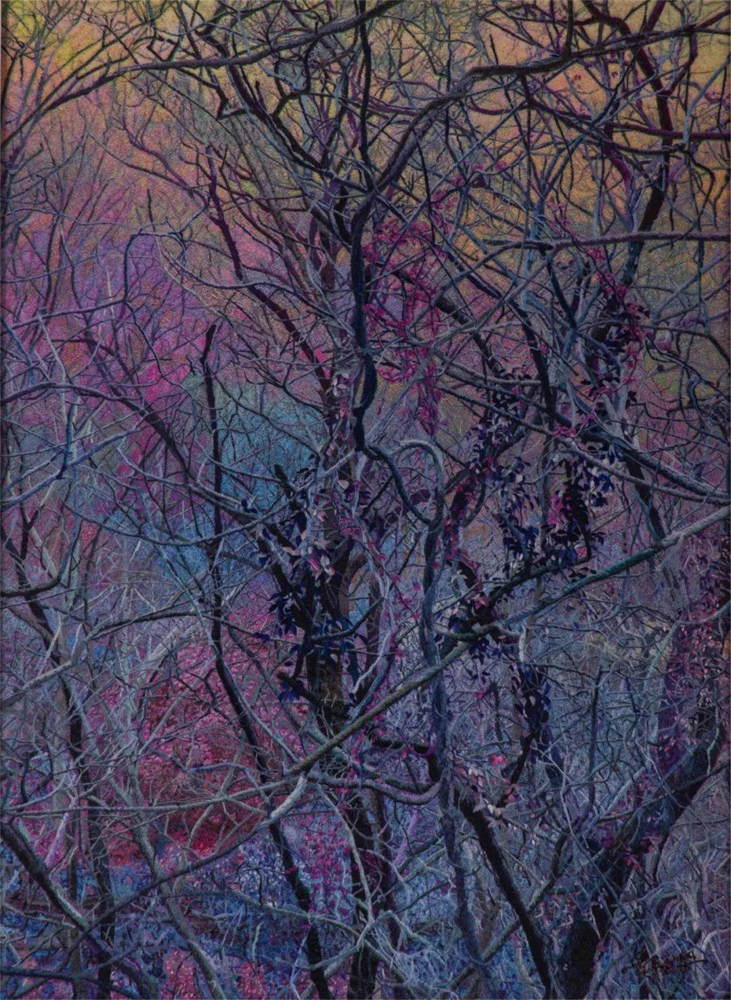
《缠绕》
传承推广与时代担当
同其他苏绣传承人一样，在深耕创作的同时，她始终毫无保留地将自己的技艺传授给后辈，且受聘于多所高校，开设织绣技艺课程，系统培养新生代绣娘，引导年轻人理解苏绣文化、热爱苏绣技艺，打破“非遗后继无人”的困境。她还整理编写刺绣技艺教程，将“邹氏滴滴针法”等创新技艺标准化、规范化，申请近百项设计专利与230余项版权，用专业力量保护苏绣技艺的传承与发展。
为了让古老的苏绣走出深闺、贴近当代生活，邹英姿积极推动苏绣跨界融合，打破传统工艺品的局限，携手潮牌、美妆、文创等多个领域，将苏绣元素融入服饰、美妆包装、家居摆件等产品中，让苏绣从博物馆走进寻常百姓家，被更多年轻人接受和喜爱。
从绣乡少女到技艺大师，从针法创新到文化传承，邹英姿用一生与绣针丝线相伴，以坚守传承文脉，以创新激活活力。
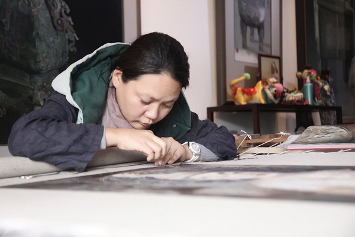